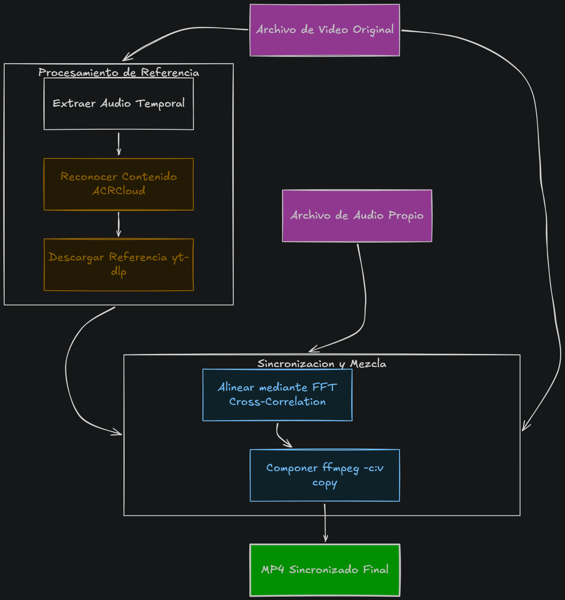

BeatMatch
BeatMatch is a tool for music recognition and composition of synchronized videos. It allows you to identify the song playing in a video, download the full audio from YouTube and generate a new MP4 file with the original video and the synchronized song.

How it works?
Extract audio → recognize the song → download the original → align with FFT → recompose the video with ffmpeg without re-encoding, preserving the quality.
The problem it solves
The audio recorded "live" sounds bad (noise, compression). The logical thing to do would be to download the original song and paste it in… but how do you align it exactly so that the timing isn't noticeable? That's the challenge.
Future Vision
It's a prototype for a mobile video editing app (iOS + Android) where BeatMatch will be the main feature.